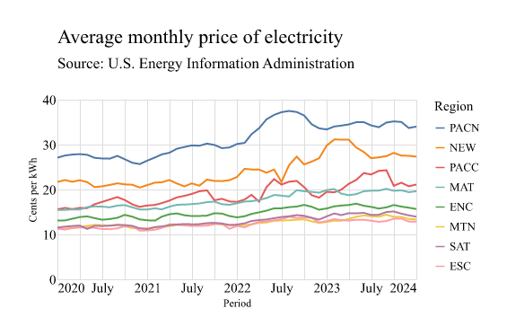
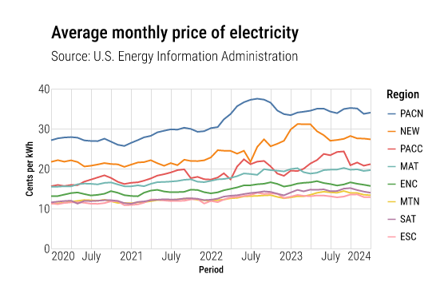

alt.Chart( df, width="container", title=alt.Title("Average monthly price of electricity", subtitle=["Source: U.S. Energy Information Administration"])).mark_line().encode( x=alt.X("period", title="Period"), y=alt.Y("price:Q", title="Cents per kWh"), color=alt.Color("stateid:N", title="Region").sort("-y"),).display(actions=False)
Figure 1
I find the chart difficult to read, mostly because of the tiny text. Is it because I am among 4% (Banashefski, Rhee, and Lema 2023) of population with severe myopia? Maybe. Or, perhaps the text size is truly too small?
hrbrthemes inspired altair theme
I am using Roboto Condensed as the example here, but hrbrthemes (Rudis et al. 2019) provides other font options.
Figure 2: hrbrthemes Roboto Condensed example
Adopted features
Sufficient spacing around the chart and between elements
Chart title: Largest size and bold weight font
Chart subtitle: Second largest size and light weight font
Axis label: Fontsize comparable to subtitle and normal weight font
Axis domain/baseline and ticks: Removed
Not adopted
Axis title alignment
Caption: Not available in altair
FYI
The first tick is aligned to the boundary of the axis. The remaining ticks are centered.
ggplot2 doesn’t always display zero.
Customising altair
Loading Google font
I’m using JupyterLab, so I used magic command to load the fonts not available on my system.
Calling alt.themes.enable(theme_name) affects all charts throughout the session. To only apply it on a single chart, use with statement as described in Changing the Theme.
# Registeralt.themes.register("theme_ipsum_rc", theme_ipsum_rc)# Enablealt.themes.enable("theme_ipsum_rc")# Chartalt.Chart( df, width="container", title=alt.Title("Average monthly price of electricity", subtitle=["Source: U.S. Energy Information Administration"])).mark_line().encode( x=alt.X("period", title="Period"), y=alt.Y("price:Q", title="Cents per kWh"), color=alt.Color("stateid:N", title="Region").sort("-y"),).display(renderer="svg", actions=False)
Figure 3
Exporting to PNG
Since the font is not available on my device, saving the chart with chart.save("output.png") uses the default system font. Downloading and adding the fonts could probably work, but I am looking for more of a temporary workaround. So here’s what I did:
First, I download the fonts from Google Fonts and unzipped the file. Then I specified the unzipped font directory with vl_convert.
To install via pip:
pip install vl-convert-python
Once installed, import the package and specify the folder:
Then save the chart again, and it should use the custom font. See System font requirements for more detail.

(a) System font

(b) Custom font
Figure 4: Altair outputs
References
Banashefski, Bryana, Michelle K. Rhee, and Gareth M. C. Lema. 2023. “High Myopia Prevalence Across Racial Groups in the United States: A Systematic Scoping Review.”Journal of Clinical Medicine 12 (8). https://doi.org/10.3390/jcm12083045.
Rudis, boB, Joris Meys, Matthew Pancia, Karl Dunkle Werner, Xavier A, Phil, Lukas Burk, Jacob, Bhaskar V. Karambelkar, and Ben Marwick. 2019. “Hrbrmstr/Hrbrthemes: Dark Matter.” Zenodo. https://doi.org/10.5281/zenodo.2545422.